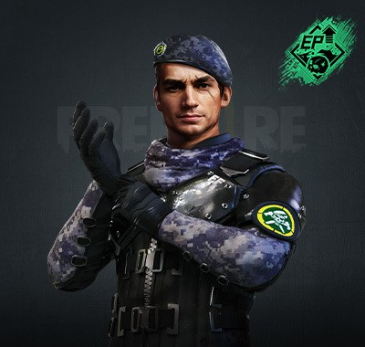
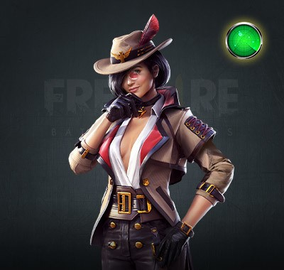
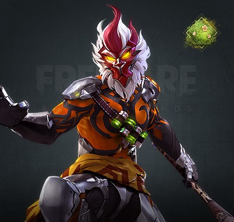
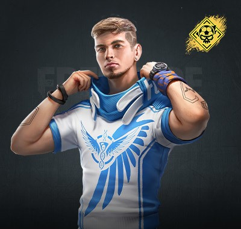
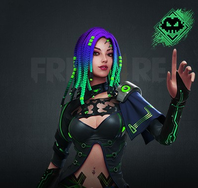

PERSONAJES
HAYATO
Su habilidad hace que el jugador tenga mayor penetración de armadura mientras menos puntos vitales tenga (HP). En su máximo nivel, Bushido hace que obtengas 10% de penetración al tener mejor de 10% de HP. Habilidad pasiva

MIGUEL
Su habilidad hace que por cada enemigo eliminado, Miguel obtiene puntos de EP, los cuales el resto de personajes solo pueden conseguir al comer un champiñón. Habilidad pasiva.
CLU
Su habilidad hace que revele por unos pocos segundos a cualquier enemigo que esté de pie y se encuentre dentro del radio de efecto (entre 50 y 75 metros según el nivel). Habilidad activa.
WUKONG
Su habilidad hace que se convierta en un arbusto. La transformación se quita al atacar, pero la habilidad se puede reiniciar si Wukong elimina a un enemigo. Se desactiva el disparo por defecto a los que quieran atacarlo mientras esta convertido. Habilidad activa.
LUQUETA
Su habilidad hace que con cada eliminación, Luqueta aumenta un poco su salud total hasta un máximo de 50.Habilidad pasiva.
MOCO
Su habilidad marca por unos pocos segundos a los enemigos disparados. Esto permite a tus compañeros ver dónde están los enemigos que contienen la marca. Habilidad pasiva. Habilidad renacida: las marcas durarán un tiempo extra si el enemigo, tras ser marcado, sigue moviéndose. Habilidad pasiva.
